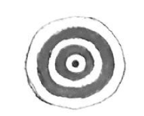
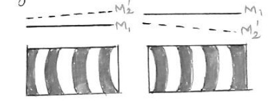
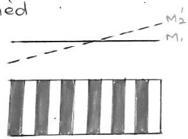
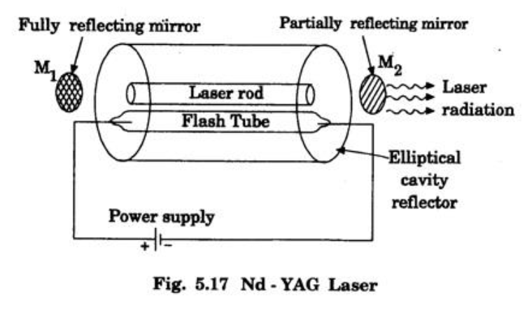
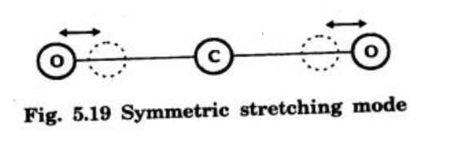
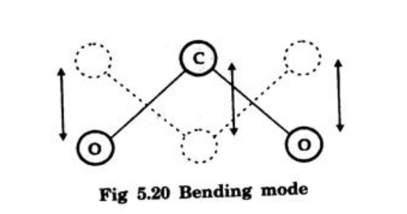
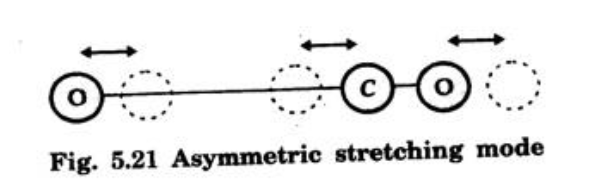
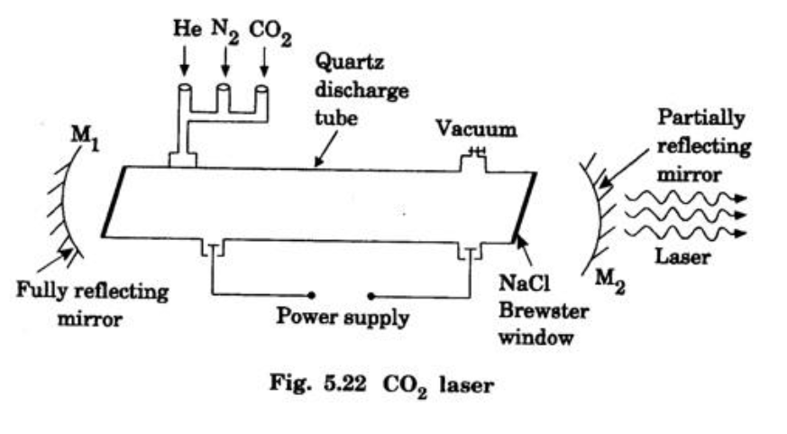
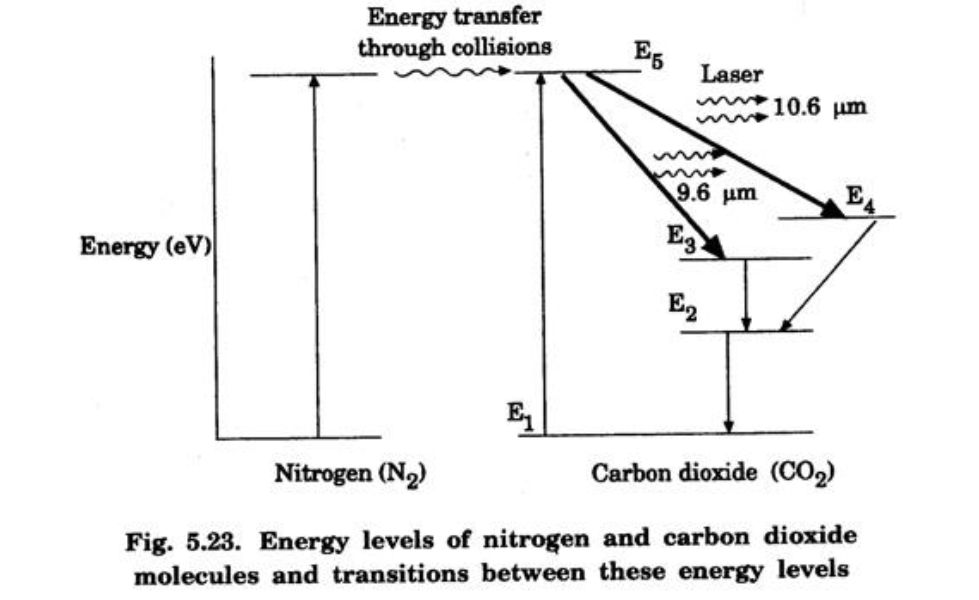

Unit 3 – Part B: Optics and Lasers
Q1: Explain the formation of interference fringes in an air-wedge shaped film. How is the thickness of the wire determined by this method?
1. Formation of Interference Fringes (Air Wedge)
An air wedge is a thin film of air with zero thickness at one end and progressively increasing thickness at the other. It is formed by placing a thin object (like a wire) between two optically flat glass plates.
- Reflection: When monochromatic light falls on the film, it is partly reflected from the top surface of the air film (Ray 1) and partly transmitted, then reflected from the bottom surface (Ray 2).
- Coherence: These two rays are coherent as they originate from the same source.
- Phase Change: A phase change of $180^\circ$ (or $\pi$) occurs for Ray 2 because it reflects from the denser medium (the bottom plate). No phase shift occurs for Ray 1.
- Interference: This phase difference causes destructive interference at the point of contact (zero thickness), resulting in a dark fringe. As thickness $t$ increases, the path difference $2t$ increases, creating alternating bright and dark straight-line fringes.
2. Determination of Thickness of Wire
The setup is used to measure the thickness of a thin wire.
- Setup: Two glass plates form a wedge with the wire inserted at one end.
- Illumination: Light from a sodium vapor lamp falls normally on the wedge via a glass plate at $45^\circ$.
- Observation: Fringes are viewed through a microscope.
Calculation:
By measuring the average width of a specific number of fringes (e.g., 5 or 10), we determine the fringe width ($\beta$). The thickness of the wire ($t$) is related to fringe width ($\beta$), wavelength ($\lambda$), and the length of the wedge ($L$) by:
Rearranging for thickness:
$$ t = \frac{\lambda L}{2\beta} $$Thus, knowing $\lambda$, $L$, and the measured $\beta$, the thickness $t$ is calculated.
Q2: Describe the construction of a Michelson interferometer and discuss the different type of interference fringes formed in it.
1. Principle and Construction
The Michelson Interferometer works on the principle of division of amplitude, splitting a light beam into two parts that travel different paths and recombine to interfere.

- Beam Splitter ($G_1$): A semi-silvered glass plate at $45^\circ$ that splits the source light into reflected and transmitted beams of equal intensity.
- Compensatory Plate ($G_2$): Placed in the path of the transmitted beam to equalize the optical path lengths through the glass material.
- Mirrors: A movable mirror ($M_1$) and a fixed mirror ($M_2$).
- Operation: Beams reflect off $M_1$ and $M_2$, return to $G_1$, and recombine towards the screen/telescope.
2. Types of Fringes
The pattern depends on the alignment of $M_1$ and $M_2$.
- Circular Fringes: Formed when $M_1$ and $M_2$ are perfectly parallel.
- Curved Fringes: Formed when $M_1$ and $M_2$ are inclined, creating a wedge-shaped air film.
- Straight Fringes: Formed when $M_1$ and $M_2$ effectively intersect.



Q3: Explain the principle, construction, and working of an Nd-YAG laser.
The Nd-YAG is a four-level, solid-state laser.
1. Principle
The active medium is an Nd-YAG rod pumped by a krypton flash tube. Neodymium ions ($Nd^{3+}$) are raised to excited levels, achieving population inversion in a metastable state. The transition to a lower state emits a laser at $1.06 \mu m$.
2. Construction
- Active Medium: Yttrium Aluminium Garnet ($Y_3Al_5O_{12}$) crystal rod where some Yttrium ions are replaced by Neodymium ($Nd^{3+}$).
- Pumping: Krypton flash tube.
- Resonator: Two mirrors, $M_1$ (fully reflecting) and $M_2$ (partially reflecting).
- Cavity: An elliptical reflector focuses flash tube light onto the rod.

3. Working

- Pumping: Flash tube light ($0.73 \mu m$, $0.80 \mu m$) excites $Nd^{3+}$ ions from ground state $E_0$ to pump bands $E_3$ and $E_4$.
- Metastable State: Ions decay non-radiatively to the metastable state $E_2$.
- Population Inversion: Ions accumulate at $E_2$, creating inversion between $E_2$ and $E_1$.
- Laser Output: Stimulated emission occurs from $E_2 \to E_1$, releasing photons at $1.06 \mu m$. These are amplified by the mirrors to form the laser beam.
Applications: Range finders, micro-machining (welding, drilling).
Q4: Explain the modes of vibrations of CO2 molecule. Explain the construction, functioning, and application of CO2 laser.
The $CO_2$ laser is a highly efficient four-level molecular gas laser.
1. Modes of Vibration
- Symmetric Stretching: Oxygen atoms vibrate simultaneously away from or towards the carbon atom along the axis.
- Bending: Atoms vibrate perpendicular to the molecular axis.
- Asymmetric Stretching: Oxygen atoms move in one direction while Carbon moves in the opposite direction.



2. Construction
- Medium: Mixture of $CO_2$, $N_2$, and $He$ in a quartz discharge tube.
- Pumping: Electrical discharge via high-voltage DC.
- Resonator: Concave mirrors ($M_1$, $M_2$).
- Brewster Windows: Used to minimize reflection losses and polarize the beam.

3. Working

- Excitation of Nitrogen: Electrons from the discharge collide with $N_2$ molecules: $$ N_2 + e^* \to N_2^* + e $$
- Energy Transfer: Excited $N_2^*$ transfers energy to $CO_2$ molecules (resonant transfer to level $E_5$): $$ N_2^* + CO_2 \to CO_2^* + N_2 $$
- Laser Transitions:
- $E_5 \to E_4$ (Symmetric Stretch): $10.6 \mu m$ (Dominant).
- $E_5 \to E_3$ (Bending): $9.6 \mu m$.
- Role of Helium: Conducts heat away to the tube walls to maintain efficiency.
Q5: With proper theory and diagrams, derive Einstein’s coefficients. Also discuss its inferences.
1. Interaction Processes
Consider two energy levels $E_1$ (Ground) and $E_2$ (Excited) with populations $N_1$ and $N_2$. Let $Q$ be the radiation energy density.
- Stimulated Absorption: Atom absorbs photon $h\nu$ and moves to $E_2$. $$ N_{ab} = B_{12} N_1 Q $$
- Spontaneous Emission: Atom falls to $E_1$ randomly. $$ N_{sp} = A_{21} N_2 $$
- Stimulated Emission: Incident photon triggers atom to fall to $E_1$, emitting a coherent photon. $$ N_{st} = B_{21} N_2 Q $$
2. Derivation
At thermal equilibrium, Absorption Rate = Emission Rate:
$$ N_{ab} = N_{sp} + N_{st} $$ $$ B_{12} N_1 Q = A_{21} N_2 + B_{21} N_2 Q $$Solving for energy density $Q$:
$$ Q (B_{12} N_1 - B_{21} N_2) = A_{21} N_2 $$ $$ Q = \frac{A_{21} N_2}{B_{12} N_1 - B_{21} N_2} $$Divide numerator and denominator by $B_{21} N_2$:
$$ Q = \frac{\frac{A_{21}}{B_{21}}}{\frac{B_{12}}{B_{21}} \frac{N_1}{N_2} - 1} $$Using Boltzmann’s law, $\frac{N_1}{N_2} = e^{h\nu / kT}$. Substituting this:
$$ Q = \frac{\frac{A_{21}}{B_{21}}}{\frac{B_{12}}{B_{21}} e^{h\nu / kT} - 1} \quad \text{--- (1)} $$Compare this with Planck’s Radiation Law:
$$ Q = \frac{8\pi h \nu^3}{c^3} \left( \frac{1}{e^{h\nu / kT} - 1} \right) \quad \text{--- (2)} $$3. Inferences
- $$ B_{12} = B_{21} $$ Probability of stimulated absorption equals stimulated emission.
- $$ \frac{A_{21}}{B_{21}} = \frac{8\pi h \nu^3}{c^3} $$ The ratio of spontaneous to stimulated emission depends on the cube of frequency.
Q6: Derive an expression for numerical aperture and acceptance angle of an optical fiber.
1. Principle
Light propagates via Total Internal Reflection (TIR). The core refractive index ($n_1$) must be greater than the cladding ($n_2$).
2. Derivation
Let light enter from a medium ($n_0$) at acceptance angle $\theta_0$, refracting into the core at $\theta_r$.
Step 1: At Fiber Entry (Snell’s Law)
$$ n_0 \sin \theta_0 = n_1 \sin \theta_r \quad \text{--- (1)} $$Step 2: At Core-Cladding Interface
The ray strikes at angle $\phi$. From geometry, $\phi = 90^\circ - \theta_r$.
For the limiting case of TIR, $\phi$ equals the critical angle $\phi_c$, and the angle of refraction in cladding is $90^\circ$.
Step 3: Combining
Using trigonometric identity $\sin \theta_r = \sqrt{1 - \cos^2 \theta_r}$:
Substitute this back into Eq (1):
$$ n_0 \sin \theta_0 = n_1 \left( \frac{\sqrt{n_1^2 - n_2^2}}{n_1} \right) $$ $$ n_0 \sin \theta_0 = \sqrt{n_1^2 - n_2^2} $$3. Final Expressions
Numerical Aperture (NA): ($NA = \sin \theta_0$)
$$ NA = \frac{\sqrt{n_1^2 - n_2^2}}{n_0} $$If air is the launching medium ($n_0=1$):
$$ NA = \sqrt{n_1^2 - n_2^2} $$Acceptance Angle ($\theta_0$):
$$ \theta_0 = \sin^{-1} \left( \frac{\sqrt{n_1^2 - n_2^2}}{n_0} \right) $$